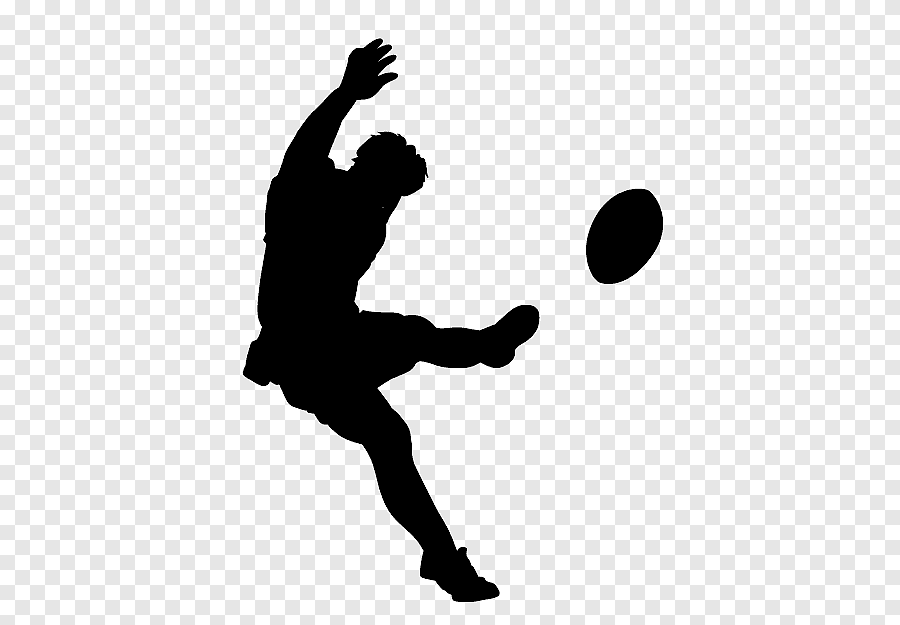
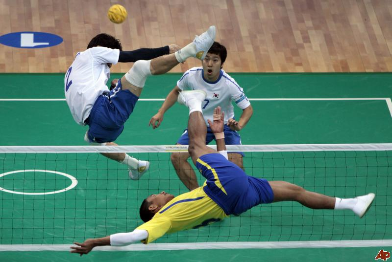

¿Qué es?

El Sepak Takraw es un deporte tradicional del sudeste asiático que combina elementos de fútbol, voleibol y gimnasia. Se juega en una cancha similar a la de voleibol, pero en lugar de usar las manos, los jugadores deben golpear un balón (tradicionalmente hecho de ratán, aunque ahora también de plástico sintético) únicamente con los pies, la cabeza, las rodillas o el pecho.
El Sepak Takraw es famoso por las acrobacias espectaculares que realizan los jugadores para rematar el balón, como las famosas "chilenas" o saltos invertidos. Es un deporte altamente dinámico, técnico y visualmente impresionante.
Historia

El Sepak es un deporte tradicional del sudeste asiático que combina fútbol, voleibol y movimientos acrobáticos. Tiene raíces en el siglo XV, particularmente en Malasia, donde era conocido como Sepak Raga, un juego en el que los jugadores formaban un círculo y mantenían el balón en el aire usando los pies. Con el tiempo, este deporte se extendió a países como Tailandia, Indonesia y Filipinas, evolucionando hacia una forma más estructurada.
En el siglo XX, Tailandia y Malasia formalizaron las reglas modernas del juego, incorporando una red similar a la de voleibol y un sistema de puntuación. Desde 1965, el Sepak Takraw ha sido parte de los Juegos del Sudeste Asiático, aumentando su popularidad en la región.
En 1988, se creó la International Sepaktakraw Federation (ISTAF), promoviendo el deporte a nivel internacional. Actualmente, el Sepak Takraw es apreciado por su espectacularidad y los movimientos acrobáticos de los jugadores, siendo practicado en competiciones de alto nivel, especialmente en Asia.
Reglas

Equipo y jugadores
Cada equipo conocido como "regu", tiene 3 jugadores en la cancha.
Roles principales:
Tekong (servidor).
Feeder (prepara el balón).
Striker (rematador).

Balón
En esta imagen podemos observar el balón que se emplea en dicho deporte poseé una forma similar a un balón de futbol, pero su interior se encuentra vacío, ya que tradicionalmente esta hecho de ratán o de plástico sintético (con un tamaño de 42-44 cm de circunferencia), además de que es mucho más pequeño que una pelota de futbol sala, lo cual hace que este deporte sea más complejo y mucho más impresionate de ver en directo o por televisión.

Campo
Sus dimensiones son similares a las del campo de bádminton de las mujeres, con una red de alturade 1.55 m para hombresy 1.45 m para mujeres.
El partido comienza cuando se realiza un saque inicial desde dentro del círculo de servicio.
El Tekong debe golpear el balón con un pie mientras el otro pie está dentro del círculo.
Puntuación y Golpes permitidos
üèê Se utiliza el sistema de rally point (cada jugada suma puntos).
üèê Gana el set el equipo que alcance 21 puntos con al menos 2 de diferencia.
üèê El partido es al mejor de 3 sets.
üèê Cada equipo puede realizar hasta 3 toques para devolver el bal√≥n.
üèê Solo se permite usar los pies, cabeza, rodillas, pecho y hombros.
üèê Las manos y los brazos están prohibidos.
Faltas
❗El balón no pasa la red o sale fuera de los límites.❗
❗El jugador toca la red o cruza la línea central del campo.❗
❗Si excede el número de toques permitidos.❗
Rotación

Aunque los roles están definidos, los equipos rotan posiciones al finalizar cada set.
En esta imagen podemos observar desde un punto de vista alternativo como sería la rotación de cada jugador dentro del campo.
Tipos de rotación
ü§∏‚Äç‚ôÇÔ∏è Rotaci√≥n ofensiva.
ü§∏‚Äç‚ôÄÔ∏è Rotaci√≥n defensiva.
ü§∏‚Äç‚ôÇÔ∏è Rotaci√≥n equlibrada.
ü§∏‚Äç‚ôÄÔ∏è Rotaci√≥n situacional.
ü§∏‚Äç‚ôÇÔ∏è Rotaci√≥n inversa.
Entrenamiento
Técnicas y jugadas
Saques
Saque Normal: Se realiza desde el área de saque (ubicada en los bordes de la cancha) y consiste en lanzar la pelota por encima de la red hacia el campo contrario.
Saque Aéreo: El jugador lanza la pelota muy alto para dificultar la recepción del adversario.
Saque Bajo: Se lanza la pelota de forma baja, pegada al suelo, para sorprender a los oponentes con un saque difícil de interceptar.
Saque Corto: Es un saque que se hace con menos potencia y buscando que la pelota caiga cerca de la red en el lado contrario.
Recepción
Recepción de Saque:Cuando el equipo contrario realiza un saque, los jugadores deben colocar su cuerpo de forma estratégica para interceptar la pelota con los pies o el pecho, y devolverla rápidamente por encima de la red.
Bloqueo de Saque:El jugador puede intentar bloquear el saque de un adversario, utilizando sus piernas o los pies para devolver el balón de forma precisa.
Variaciones de remate
Remate en Ángulo:Un remate ejecutado en un ángulo difícil que hace que la pelota se desvíe y sea difícil de recibir.
Remate de Tira: Un remate que se ejecuta con un giro rápido de la pierna, lo que hace que la pelota tome una trayectoria impredecible.
Técnicas avanzadas
Jugada de Codo: En esta técnica, el jugador utiliza su codo para golpear la pelota en el aire y hacer un pase hacia otro compañero.
Jugada de Rodilla: Los jugadores también pueden usar sus rodillas para devolver la pelota al campo contrario, especialmente cuando la pelota se encuentra cerca del suelo.
Competiciones importantes
Las competiciones más importantes de Sepak Takraw incluyen una serie de eventos internacionales y regionales que reúnen a los mejores equipos del mundo. Uno de los más destacados es el Campeonato Mundial de Sepak Takraw, organizado por la Federación Internacional de Sepak Takraw (ISTAF), que se celebra cada dos años. En este evento, equipos de países de todo el mundo compiten en diversas categorías, incluyendo el Regu (equipo), Quad (cuatro jugadores) y Sepak (individual). Este campeonato es uno de los más prestigiosos y reúne a las mejores selecciones del sudeste asiático, donde el deporte tiene sus raíces.
A nivel continental, el Campeonato Asiático de Sepak Takraw es otro evento clave, que se lleva a cabo regularmente en países asiáticos. La región asiática es la cuna de este deporte, y la competencia entre países como Tailandia, Malasia, Indonesia y Myanmar es feroz, ya que estos países dominan históricamente el deporte.
En el ámbito regional, se destacan los Juegos del Sudeste Asiático (SEA Games), un evento multideportivo que incluye Sepak Takraw como disciplina oficial desde 1975. Los países del sudeste asiático, como Tailandia, Indonesia, Vietnam y Filipinas, compiten en este evento con una gran rivalidad.
Además, el Open de Sepak Takraw y otros torneos internacionales como el Asian Sepak Takraw Championship también son plataformas donde los equipos muestran sus habilidades. Estos torneos permiten a las selecciones clasificarse para competiciones más grandes, mientras que promueven el desarrollo del deporte en países fuera de Asia, como Europa y América.